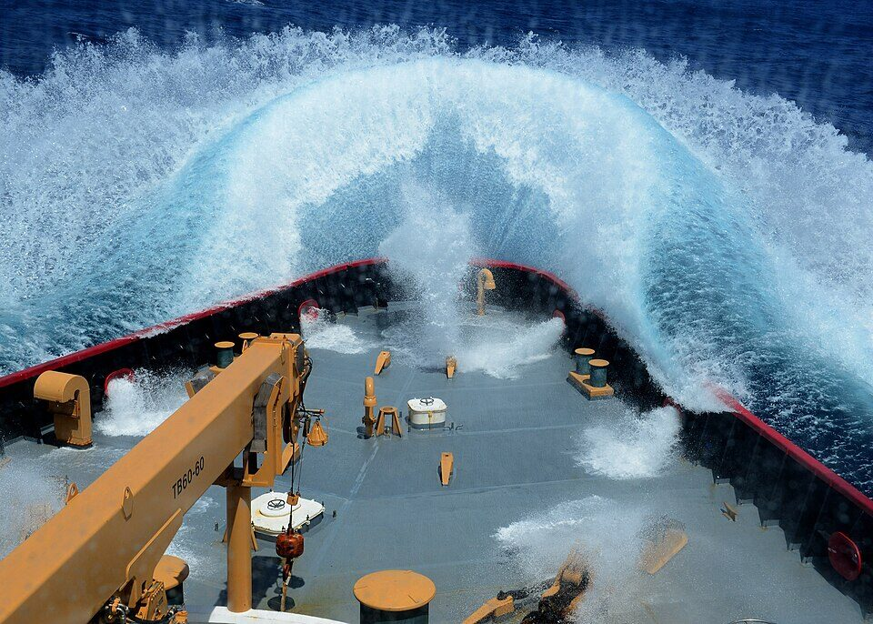
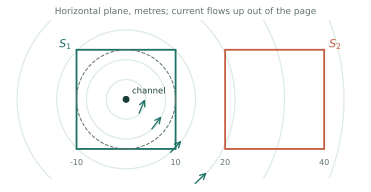

Enter fractions, decimals, pi, e, sqrt(...), sin(...), cos(...), exp(...), or log(...). Use ^ for powers and radians for angles. Vectors and bounds use commas. Decimal answers are checked to two decimal places (answers smaller than 0.1 need two significant digits); exact forms such as 6pi sqrt(37) are always fine. LaTeX such as \frac{1}{2}, \sqrt{2}, \pi, and \phi is also accepted. Equivalent expressions are accepted; potential functions may differ by a constant. Units are provided beside each input.
Hints and solutions are local worked guidance. They do not send messages to an AI service. Your inputs and notes stay in this browser; this is an ungraded practice site.
Each of the Golden Gate Bridge’s two main cables is a 0.92 m bundle of 27,572 steel wires. Between the towers it hangs in a smooth curve 1,280 m across and 144 m deep. How long is that curve, how heavy is it, and where is its balance point?
Building the model
1From the real world
Main span (tower to tower): \(1280\) m
Maximum sag of the main cable: \(h=144\) m
Cable weight: \(48.7\) kN per horizontal metre; diameter \(0.92\) m
The model: a parabolic cable between towers 1,280 m apart, lowest point at the origin (vertical scale exaggerated 2:1).
First, on paper
Parametrize the main-span cable as \(\mathbf c(t)=(t,y(t))\) with its \(t\)-interval, and find its speed. Then reverse it (Marin tower to San Francisco tower), and check that the engineer’s parametrization \(\Psi(u)=\big(k\sinh u,\ \tfrac k2\sinh^2u\big)\), \(k=12800/9\) m, traces the same curve; give its \(u\)-interval and show \(\|\Psi^{\prime}(u)\|=k\cosh^2u\). Explain why all three give the same length and the same \(\int_C y\,ds\). Estimate the weight of the main-span cable from \(\lambda=48.7\) kN per metre of cable, and explain why \(\int\lambda\,dx\) would underestimate it. Finally, the flat parabolic region between the cable and the line joining its two tops has centroid height \(3h/5=86.4\) m. Why is the wire’s centroid so much lower?
Whiteboard kit ↓An image with the diagram, model, this task, and blank work areas. Add it to your group’s shared whiteboard as a background.
aEnter the speed \(\|\mathbf c^{\prime}(t)\|\) of \(\mathbf c(t)=(t,\,9t^2/25600)\) as a function of t.
A step in the right direction
bFind the length of the main-span cable (to two decimal places).
A step in the right direction
cFind \(\bar y\), the height of the cable’s centroid above its lowest point.
A step in the right direction
View full solution +
Follow the reasoning
With the origin at the cable’s lowest point, \(y=144(x/640)^2=9x^2/25600\), so \(\mathbf c(t)=(t,9t^2/25600)\), \(-640\le t\le640\), with \(\mathbf c^{\prime}(t)=(1,9t/12800)\) and speed \(\sqrt{1+(9t/12800)^2}\). The speed grows from 1 at midspan to \(\sqrt{1.2025}\approx1.097\) at the towers.
Reversed, \(\mathbf c_3(t)=(-t,9t^2/25600)\) has the same speed at each point, so every scalar integral is unchanged. For \(\Psi\): \(y=\tfrac k2\sinh^2u=(k\sinh u)^2/(2k)\) and \(2k=25600/9\), so \(\Psi\) traces the same parabola for \(|\sinh u|\le9/20\), i.e. \(|u|\le U=\operatorname{arcsinh}(9/20)\). \(\Psi^{\prime}=(k\cosh u,k\sinh u\cosh u)\) has length \(k\cosh u\sqrt{1+\sinh^2u}=k\cosh^2u\). Each parametrization traces the curve once, so \(ds\) is the same geometric arc length.
\[L=k\int_{-U}^{U}\cosh^2u\,du=k\,(U+\sinh U\cosh U)\approx1321.97\text{ m},\] about 42 m more than the 1,280 m span.
\[\int_C y\,ds=\frac{k^2}{8}\int_{-U}^{U}\sinh^2(2u)\,du=\frac{k^2}{8}\Big(\frac{\sinh4U}{4}-U\Big)\approx65047\text{ m}^2,\] so \(\bar y\approx65047/1321.97\approx49.20\) m. By symmetry \(\bar x=0\).
Weight: \(\int_C\lambda\,ds=48.7\times1321.97\approx64{,}380\) kN, about 6,560 t; \(\int\lambda\,dx=48.7\times1280\approx62{,}340\) kN misses the extra length of the sloping parts. The flat region is widest at the top, so its area sits high (centroid \(3h/5\)); the wire’s mass is spread almost evenly in \(x\), and most of the span is low, so its centroid is near \(h/3\).
Final answers
a.\(\sqrt{\frac{81 t^{2}}{163840000} + 1}\)
b.\(1321.97431941635\) m
c.\(49.2045532645424\) m
Discussion
No. Weight per horizontal metre is \(\lambda\,ds/dx=\lambda\sqrt{1+(y^{\prime})^2}\), which equals \(\lambda\) only at midspan and grows to about \(1.097\lambda\) at the towers, where the cable is steepest. (For a real suspension bridge it is the deck’s load per horizontal metre that is nearly constant, which is why the cable hangs as a parabola.)
Think it through
The source lists the cable’s weight per horizontal metre. If the weight per metre of cable is constant, is the weight per horizontal metre also constant? Where along the span is it largest?
Saved on this browser · Discussion prompt, not automatically graded
Problem 02Core
Sailing around Antarctica: with or against the current?

Photo: U.S. Coast Guard photo by Petty Officer 1st Class George Degener · Public domain · Wikimedia Commons
The Antarctic Circumpolar Current, driven by strong westerly winds, is the only ocean current that circles the whole globe. A ship circling Antarctica can ride it or fight it. How much does the current help, and why does the direction of the voyage matter for some totals but not others?
Building the model
1From the real world
Average speed of the Antarctic Circumpolar Current: \(50\) cm/s \(=1.8\) km/h
The current flows from west to east (the West Wind Drift)
Along the voyage the current flows due east at \(1.8\) km/h, with a small northward drift of \(0.18\) km/h (0.05 m/s)
3So the model is
Map: Earth viewed from directly above the South Pole; \(x,y\) in km. The \(60^\circ\) S circle appears at its true radius \(\rho=R\cos60^\circ=3185.5\) km
Surface current: \(\mathbf u(x,y)=\dfrac{1.8}{\rho}(y,\,-x)+\dfrac{0.18}{\rho}(x,\,y)\) km/h near the voyage circle
\(C\): the circle \(x^2+y^2=\rho^2\)
View from above the South Pole: the voyage circle \(\rho=3185.5\) km and the model current (drift exaggerated).
First, on paper
Sketch the map: Antarctica, the voyage circle, and \(\mathbf u\) at eight points of the circle. Show that the eastward part of \(\mathbf u\) turns clockwise on this map and that the drift points away from the pole. Parametrize the westward voyage (counterclockwise on the map) with its interval. Without integrating, use your sketch to explain why the drift contributes nothing to \(\oint_C\mathbf u\cdot d\mathbf r\). Explain why reversing the voyage flips the sign of \(\oint_C\mathbf u\cdot d\mathbf r\) but not of \(\oint_C ds\) or \(\oint_C\|\mathbf u\|\,ds\). Finally, a ship moving at speed \(V\) through the water needs time \(\oint_C ds/(V+\mathbf u\cdot\mathbf T)\); show that, to first order, this is \(L/V-(\oint_C\mathbf u\cdot d\mathbf r)/V^2\), and estimate the hours an eastward voyage at \(V=20\) km/h saves over a westward one.
Whiteboard kit ↓An image with the diagram, model, this task, and blank work areas. Add it to your group’s shared whiteboard as a background.
aFind the length \(\oint_C 1\,ds\) of the voyage.
A step in the right direction
bFind \(\oint_C\mathbf u\cdot d\mathbf r\) for the westward voyage (counterclockwise on the map).
A step in the right direction
cFind \(\oint_C\|\mathbf u\|\,ds\) for the same westward voyage.
A step in the right direction
View full solution +
Follow the reasoning
On this view eastward is clockwise, because Earth turns clockwise seen from above the South Pole. The westward voyage is \(\mathbf c(t)=(\rho\cos t,\rho\sin t)\), \(0\le t\le2\pi\), with \(\rho=6371\cos60^\circ=3185.5\) km and speed \(\rho\), so \(\oint_C ds=2\pi\rho=6371\pi\approx20{,}015\) km.
On the circle the drift \((0.18/\rho)(x,y)\) is radial and \(\mathbf c^{\prime}(t)\) is tangent, so their dot product is zero at every point. The eastward part gives \(\frac{1.8}{\rho}(\rho\sin t,-\rho\cos t)\cdot(-\rho\sin t,\rho\cos t)=-1.8\rho\), so \(\oint_C\mathbf u\cdot d\mathbf r=-1.8(2\pi\rho)=-11467.8\pi\approx-36{,}027\) km2/h. Eastward (clockwise) gives \(+36{,}027\) km2/h: reversing \(\mathbf c^{\prime}\) flips each dot product.
\(\|\mathbf u\|=\sqrt{1.8^2+0.18^2}=1.8\sqrt{1.01}\) km/h everywhere on the circle, so \(\oint_C\|\mathbf u\|\,ds=1.8\sqrt{1.01}\,(6371\pi)\approx36{,}207\) km2/h for either direction. The scalar integral counts the drift and ignores direction; the line integral ignores the drift and keeps direction.
Since \(1/(V+w)\approx1/V-w/V^2\) for small \(w\), the time is about \(L/V-\frac{1}{V^2}\oint_C\mathbf u\cdot d\mathbf r\). Going east saves about \(2(36{,}027)/20^2\approx180\) hours, roughly a week, compared with going west. The exact values \(L/(V\mp1.8)\) differ by about 182 hours.
Final answers
a.\(6371 \pi\) km
b.\(- 11467.8 \pi\) km2/h
c.\(11524.996364789 \pi\) km2/h
Discussion
The line integral adds only the part of the flow along the loop, with a sign, so flow that goes around adds up and flow that crosses the loop or reverses cancels. \(\oint\|\mathbf u\|\,ds\) counts every bit of motion as positive, so water drifting straight across the loop or sloshing back and forth would also make it large.
Think it through
Ocean circulation is measured in m²/s, the same units as this line integral. Why is \(\oint\mathbf u\cdot d\mathbf r\) a natural measure of how strongly water swirls around a loop, while \(\oint\|\mathbf u\|\,ds\) is not?
Saved on this browser · Discussion prompt, not automatically graded
Climbers notice that sealed snack bags puff up on the way to high camps. On the summit of Mount Everest in 1981, Chris Pizzo of the American Medical Research Expedition measured an air pressure only one third of sea-level pressure. Physicists follow a gas on a pressure–volume diagram, where a “path” is the process that carries it from one state to another. Which totals depend on the path?
Building the model
1From the real world
Summit pressure measured in October 1981: \(253\) mm Hg
One standard atmosphere: \(760\) mm Hg, so the summit had \(253/760=0.333\) atm
The bag holds \(1\) L of air at \(1\) atm and \(300\) K at sea level
At the summit: \(1/3\) atm and \(250\) K; the slack bag keeps its inside pressure equal to the outside
Air is an ideal diatomic gas: \(PV/T\) is constant and \(U=\tfrac52PV\)
3So the model is
Coordinates: \(x=V\) (L), \(y=P\) (atm). Start A \(=(1,1)\), summit B \(=(2.5,\,1/3)\)
Work done by the air \(W=\int_C y\,dx\); energy change \(\Delta U=\int_C\tfrac52y\,dx+\tfrac52x\,dy\); heat \(Q=\Delta U+W\)
Path 1: the straight segment from A to B. Path 2: along the isotherm \(xy=1\) from A to \((3,1/3)\), then at constant \(y=1/3\) to B
The two processes from A \(=(1,1)\) to B \(=(2.5,1/3)\) on the \((V,P)\) diagram.
First, on paper
Parametrize both paths (path 2 has two pieces) with their intervals. Compute the energy integral \(\int_C\tfrac52y\,dx+\tfrac52x\,dy\) directly along both paths. The two answers agree: does that alone prove the integral is path independent? Explain why unequal answers on two paths disprove path independence while equal answers on two paths do not prove it. Check the cross-partials of the work field \((y,0)\) and of the heat field \((\tfrac72y,\tfrac52x)\), and find the heat \(Q\) absorbed along each path.
Whiteboard kit ↓An image with the diagram, model, this task, and blank work areas. Add it to your group’s shared whiteboard as a background.
aFind the work \(W=\int_C y\,dx\) done by the air along path 1, the straight segment.
A step in the right direction
bFind the work \(W=\int_C y\,dx\) along path 2.
A step in the right direction
cEnter a potential \(f(x,y)\) for the energy field \(\big(\tfrac52y,\ \tfrac52x\big)\).
A step in the right direction
View full solution +
Follow the reasoning
Path 1: \(\mathbf c(t)=(1+1.5t,\,1-\tfrac23t)\), \(0\le t\le1\). Path 2: \(\mathbf c(t)=(t,1/t)\), \(1\le t\le3\), then \(\mathbf c(t)=(3-0.5t,\,1/3)\), \(0\le t\le1\). Both start at A \(=(1,1)\) and end at B \(=(2.5,1/3)\).
Path 1: \(W=\int_0^1(1-\tfrac23t)(1.5)\,dt=1\) L·atm. Path 2: \(W=\int_1^3\frac{dt}{t}+\int_0^1\tfrac13(-0.5)\,dt=\ln3-\tfrac16\approx0.932\) L·atm. Different works with the same endpoints prove that \(\int y\,dx\) is path dependent; indeed \(\partial_y(y)=1\ne0=\partial_x(0)\).
Energy: on path 1, \(\tfrac52\int_0^1\big[(1-\tfrac23t)(1.5)+(1+1.5t)(-\tfrac23)\big]dt=\tfrac52\int_0^1(\tfrac56-2t)\,dt=-\tfrac5{12}\); on path 2, \(\tfrac52\big[\int_1^3(\tfrac1t-\tfrac1t)\,dt+\int_0^1(-\tfrac16)\,dt\big]=-\tfrac5{12}\). Agreement on two paths proves nothing by itself. The potential \(f=\tfrac52xy\) (\(f_x=\tfrac52y\), \(f_y=\tfrac52x\)) proves it for every path: \(\Delta U=f(B)-f(A)=\tfrac52(\tfrac56-1)=-\tfrac5{12}\) L·atm.
Heat \(Q=\Delta U+W\): \(Q_1=-\tfrac5{12}+1=\tfrac7{12}\approx0.583\) and \(Q_2=-\tfrac5{12}+\ln3-\tfrac16\approx0.515\) L·atm (\(1\) L·atm \(=101.325\) J). The heat field fails the test: \(\partial_y(\tfrac72y)=\tfrac72\ne\tfrac52=\partial_x(\tfrac52x)\). Internal energy is a state function; heat and work are not.
\(\Delta U=0\) around any loop, because \(U\) has a potential \(\tfrac52PV\) and the loop ends where it starts. Work \(\oint P\,dV\) is path dependent, so around a loop it need not be zero: it equals the signed area enclosed by the loop (Green’s theorem, Week 9), the net work the engine delivers each cycle, supplied by the heat absorbed.
Think it through
On a pressure–volume diagram an engine runs around a closed loop. What is \(\Delta U\) around any loop, and why can the work around the loop still be nonzero?
Saved on this browser · Discussion prompt, not automatically graded
The road from Prato allo Stelvio up to the Stelvio Pass, 2,757 m high in the Italian Alps, climbs through 48 hairpin bends. Cyclists from around the world ride it. How much work does Earth’s gravity do on a rider, and does all that twisting matter?
Building the model
1From the real world
Stelvio Pass: \(2757\) m; Prato allo Stelvio: \(915\) m
48 hairpins on the 25 km road between them
Earth: \(GM=3.9860\times10^{14}\) m3/s2, \(R=6{,}371{,}000\) m
Earth is a non-rotating sphere; elevation is measured along the radius, so a point at elevation \(h\) has \(r=R+h\)
3So the model is
Gravity, Earth’s center at the origin: \(\mathbf F=-\dfrac{GMm\,(x,y,z)}{(x^2+y^2+z^2)^{3/2}}\) N
Road, \(0\le t\le1\): \(\mathbf c(t)=(R+h)(\cos\phi\cos\lambda,\ \cos\phi\sin\lambda,\ \sin\phi)\) with
\(h=915+1842t+15\sin(2\pi t)\sin(48\pi t)\) m, \(\phi=46.62^\circ-0.09^\circ t-0.003^\circ\sin(48\pi t)\), \(\lambda=10.59^\circ-0.14^\circ t+0.004^\circ\sin(48\pi t)\)
The hairpin model seen from above (left) and the only thing gravity’s work depends on: the distances \(r_A\) and \(r_B\) from Earth’s center (right, not to scale).
First, on paper
Find a potential \(f\) for \(\mathbf F\) by integrating \(F_1\) with respect to \(x\) and carrying an unknown function \(g(y,z)\); then use \(F_2\) and \(F_3\) to show \(g\) is constant. Explain why you never need \(\phi(t)\) or \(\lambda(t)\), and why the extra term in \(h(t)\) does not matter. What is the work done by gravity on the descent? Compare your answer with the flat-Earth estimate \(-mg\,\Delta h\), \(g=GM/R^2\). Finally, explain why gravity’s total work around any closed ride is zero even though the rider is exhausted.
Whiteboard kit ↓An image with the diagram, model, this task, and blank work areas. Add it to your group’s shared whiteboard as a background.
aEnter a potential \(f(x,y,z)\) for \(\mathbf F\), writing the constant \(GMm\) as c.
A step in the right direction
bFind the work done by gravity on the rider from Prato to the pass along the hairpin road.
A step in the right direction
cA rider climbs from Prato to the pass, descends the far side to Bormio, and returns to Prato by another road. What is the total work done by gravity?
A step in the right direction
View full solution +
Follow the reasoning
\(f_x=F_1=-c\,x(x^2+y^2+z^2)^{-3/2}\) integrates to \(f=c(x^2+y^2+z^2)^{-1/2}+g(y,z)\). Then \(f_y=-c\,y(x^2+y^2+z^2)^{-3/2}+g_y=F_2\) forces \(g_y=0\), and \(f_z=F_3\) forces \(g_z=0\). So \(f=c/\sqrt{x^2+y^2+z^2}=GMm/r\), defined everywhere except Earth’s center.
By the fundamental theorem, the work is \(f(\mathbf c(1))-f(\mathbf c(0))\), and \(f\) depends only on \(r=\|\mathbf c\|=R+h\). Since \(h(0)=915\) and \(h(1)=2757\) (the sine terms vanish at both ends), the angles never enter.
With \(c=GMm=3.9860\times10^{14}\times80\) J·m, \[W=c\Big(\frac1{6{,}373{,}757}-\frac1{6{,}371{,}915}\Big)\approx-1{,}446{,}277\text{ J}\approx-1446.28\text{ kJ}.\] Descending reverses the path and gives \(+1446.28\) kJ.
Flat Earth: \(g=GM/R^2\approx9.820\) m/s2 and \(-mg\,\Delta h=-80(9.820)(1842)\approx-1447.11\) kJ, only 0.06% different, because \(g\) is slightly weaker at altitude. Around a closed ride, \(f\) ends where it starts, so gravity’s work is \(0\); the rider’s work is lost to air drag, rolling friction, and body heat, which have no potential.
Final answers
a.\(\frac{c}{\sqrt{x^{2} + y^{2} + z^{2}}}+C\) J
b.\(-1446.27683945079\) kJ
c. 0 J: gravity has a potential everywhere the rider can be, and the ride ends where it starts.
Discussion
Equal cross-partials give a potential on domains with no holes that a loop can wrap around. Space with one point removed has none: any loop can slide off the missing point, and f = GMm/r is defined everywhere except the center. The plane with a point removed has a hole that a loop can circle, and there (−y, x)/(x² + y²) has circulation 2π.
Think it through
The punctured-plane field (−y, x)/(x² + y²) has equal cross-partials but no potential. Gravity here is also undefined at one point, yet it has a potential. What is different?
Saved on this browser · Discussion prompt, not automatically graded
Problem 05Extension
Lightning’s magnetic loop
A typical lightning flash carries about 30,000 amperes, and the Empire State Building is struck about 23 times a year. The current in the channel wraps the surrounding air in a circular magnetic field. Ampère’s law says the field’s circulation around a loop depends on the current inside it, not on the loop’s shape.
Building the model
1From the real world
Typical lightning current: about \(30{,}000\) A
The Empire State Building is struck about 23 times a year
The channel is a long, straight vertical line carrying a steady \(I=30{,}000\) A upward
\(\mu_0=4\pi\times10^{-7}\) T·m/A, so \(\mu_0I/(2\pi)=6\) mT·m
3So the model is
In a horizontal plane, \(x,y\) in metres, channel at the origin: \(\mathbf B=\dfrac{6\,(-y,\ x)}{x^2+y^2}\) mT
\(S_1\): the square \(|x|\le10\), \(|y|\le10\); \(S_2\): the square \(20\le x\le40\), \(|y|\le10\); both counterclockwise

Top view: field lines of \(\mathbf B\) around the channel, the circle of radius 10 m, and the squares \(S_1\) and \(S_2\).
First, on paper
Use symmetry to add the four oriented edges of the square \(S_1\) and compare the total with part (a). Show that \(\partial B_1/\partial y=\partial B_2/\partial x\) wherever the field is defined, and explain why \(\mathbf B\) is nevertheless not a gradient on the plane with the channel removed. Then compute the circulation around \(S_2\) by adding its four oriented edges.
Whiteboard kit ↓An image with the diagram, model, this task, and blank work areas. Add it to your group’s shared whiteboard as a background.
aFind \(\oint\mathbf B\cdot d\mathbf r\) around the circle of radius 10 m centred on the channel, counterclockwise.
A step in the right direction
bFind \(\int\mathbf B\cdot d\mathbf r\) along the right edge of \(S_1\), from \((10,-10)\) to \((10,10)\).
A step in the right direction
cEnter \(\partial B_2/\partial x\) as a function of x and y.
A step in the right direction
View full solution +
Follow the reasoning
On the circle \(\mathbf c(t)=(10\cos t,10\sin t)\), \(\mathbf B=0.6(-\sin t,\cos t)\) and \(\mathbf c^{\prime}=10(-\sin t,\cos t)\), so the integrand is 6 and the circulation is \(12\pi\approx37.70\) mT·m \(=\mu_0I\).
Right edge: \(\int_{-10}^{10}\frac{60}{100+y^2}\,dy=6\big[\arctan(y/10)\big]_{-10}^{10}=3\pi\). By the four-fold symmetry each counterclockwise edge of \(S_1\) gives \(3\pi\), and the total \(12\pi\) matches the circle.
\(\partial_x\frac{6x}{x^2+y^2}=\frac{6(y^2-x^2)}{(x^2+y^2)^2}=\partial_y\frac{-6y}{x^2+y^2}\). If \(\mathbf B=\nabla f\) on the punctured plane, every closed loop would give 0, but the circle gives \(12\pi\). Equal cross-partials guarantee a potential only on a domain without holes.
\(S_2\) does not enclose the channel. Its edges \(x=40\) and \(x=20\) give \(6\cdot2\arctan(1/4)\) and \(-6\cdot2\arctan(1/2)\); the edges \(y=\mp10\) give \(6[\arctan(4)-\arctan(2)]\) each. Since \(\arctan4=\pi/2-\arctan\tfrac14\) and \(\arctan2=\pi/2-\arctan\tfrac12\), the total is \(0\).
The domain, the plane with the channel removed, has a hole, so a loop can circle the current; the cross-partial test is only reliable on a domain with no holes. A square away from the channel lies in a hole-free region, such as a half-plane, where B has a potential (a multiple of the polar angle), so its circulation is zero.
Think it through
The cross-partial test missed that B is not a gradient. What feature of the domain is responsible, and why does a square that does not surround the channel give zero?
Saved on this browser · Discussion prompt, not automatically graded
Field notes
Where the numbers come from
Published values are snapshots. Assumed geometry and analytical fields are labeled in each problem.
Published structural statistics
Golden Gate Bridge: design and construction statistics
Golden Gate Bridge Highway and Transportation District, accessed November 17, 2026. The weight row covers both main cables plus the suspender cables and accessories.
The Golden Gate Bridge (statics chapter), Table 3.2
Chapter by Thalia Anagnos in Sheppard and Tongue, Statics: Analysis and Design of Systems in Equilibrium (Wiley), hosted by the Bridge District. Its Table 3.2 cites the District and Abdel-Ghaffar and Scanlan (1985). The parabolic shape used in the problem is a model.
Woods Hole Oceanographic Institution, Polar Discovery (2006), map caption. The companion WHOI page divediscover.whoi.edu/polar-regions/antarctic-ocean-circulation describes the current as the West Wind Drift, driven by strong westerly winds. The speed field in the problem is a model, not a measurement.
Quantity
Published value
Average speed of the Antarctic Circumpolar Current
J. B. West, “Oxygenless” climbs and barometric pressure
American Alpine Journal, 1984. The article reports the pressure Chris Pizzo measured on the summit of Mount Everest during the American Medical Research Expedition to Everest, October 1981, and notes it was 17 mm higher than the Standard Atmosphere predicts. 760 mm Hg is one standard atmosphere by definition.
Official South Tyrol tourism site, accessed November 17, 2026. The page gives 1838 m of climbing for the 25 km bike route; the endpoint elevations below differ by 1842 m.
NASA NSSDC, accessed November 17, 2026. GM is the product of the gravitational constant and Earth’s mass. The real Earth is slightly flattened and rotating; the problem uses a non-rotating sphere.
National Weather Service: How powerful is lightning?
NOAA National Weather Service, accessed November 17, 2026. The strike frequency is from the NWS page weather.gov/safety/lightning-myths. Real flashes vary widely; the straight, steady channel in the problem is a model.